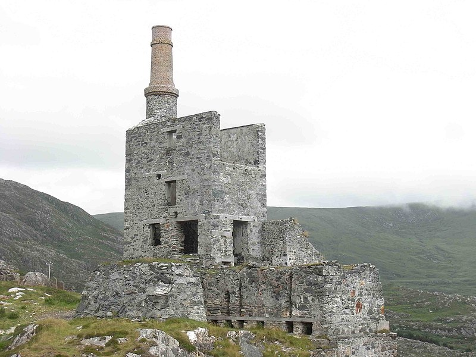
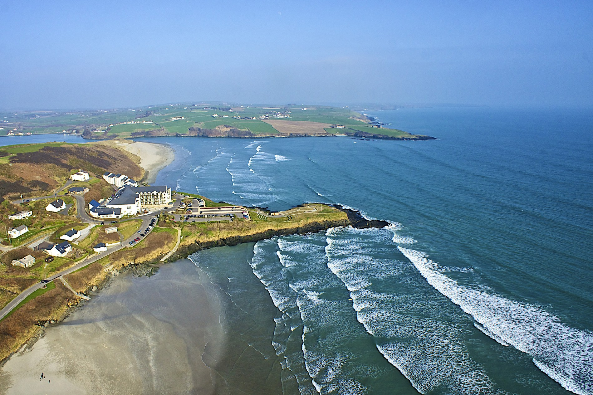

From the Bronze age the area had been a site of copper-mining. In 1812 John Lavallin Puxley (1772-1856) established a company to operate the Berehaven copper mines at Allihies. During the following century, between 1812 and 1912, 297,000 tons of ore were recorded as passing through the smelter at Swansea in Wales from the mines at Allihies.Drilling during this period by the Berehaven company took place throughout the townland of Allihies, and the adjacent townlands of Cloan and Kealoge. Three ruined Cornish engine houses are visible from Allihies. The most visually prominent is the Mountain Mine man engine house, located on the skyline above the village, and installed by the noted Cornish engineers Michael Loam and Son in 1862. In the late nineteenth century, newly developed sources of copper ore were being worked in Africa, the Americas and Australia. A resulting fall in the worldwide price of copper led in 1884 to the closure of the mining operations at Allihies. The area saw large-scale emigration, with many of the miners finding their way to newly-developing mining centres in the United States and Canada. Among these centres is Butte, Montana, where many families (Lowneys, Harringtons and others) trace their ancestry to Allihies and the Beara peninsula.
Clonakilty Irish: Cloich na Coillte, Clanna Chaoilte sometimes shortened to Clon, is a town in County Cork, Ireland. The town is located at the head of the tidal Clonakilty Bay. The rural hinterland is used mainly for dairy farming.The town's population as of 2016 was 4,592.The town is a tourism hub in West Cork, and was recognised as the "Best Town in Europe" in 2017, and "Best Place of the Year" in 2017 by the Royal Institute of the Architects of Ireland.Clonakilty is in the Cork South-West (Dáil Éireann) constituency, which has three seats.Michael Collins, who was the Director of Intelligence for the IRA, which sought independence from Britain in the 1920–1921 period, lived in Clonakilty and attended the local boys' national school. Collins later served as Chairman of the Provisional Government and was instrumental in the founding of the Irish Free State. Collins was killed in an Anti-Treaty ambush during the Civil War. He gave several orations from O'Donovan's Hotel on the Main Street of Clonakilty. A statue of Michael Collins by local artist Kevin Holland was erected and dedicated in 2002 at the junction of Bridge Street and Emmet Square.
